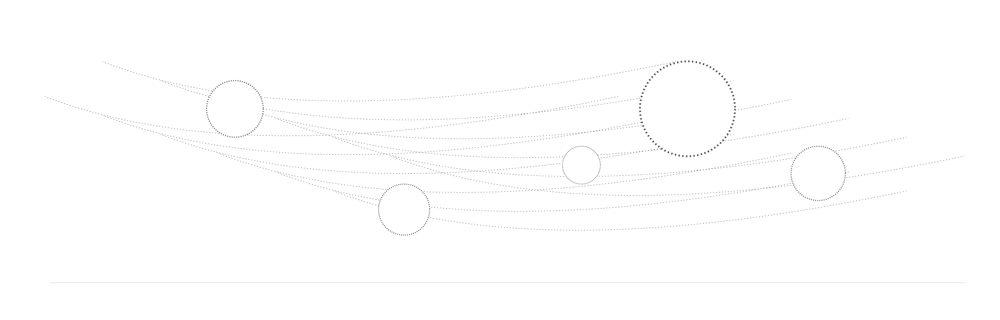

design
systems
process
visual
systems
ux
product
editorial

**one
We’ve all been in situations in which we couldn’t wait for a slow-moving or overly cautious employee to take action. But at the other extreme, some employees have such a deep need to get things resolved that they move too quickly, or too intensely, and make a mess. They may make a bad deal just to say they’ve made it, or issue a directive without thinking through the ramifications just to say they’ve handled a problem decisively.
**two
We’ve all been in situations in which we couldn’t wait for a slow-moving or overly cautious employee to take action. But at the other extreme, some employees have such a deep need to get things resolved that they move too quickly, or too intensely, and make a mess. They may make a bad deal just to say they’ve made it, or issue a directive without thinking through the ramifications just to say they’ve handled a problem decisively.
**three
We’ve all been in situations in which we couldn’t wait for a slow-moving or overly cautious employee to take action. But at the other extreme, some employees have such a deep need to get things resolved that they move too quickly, or too intensely, and make a mess. They may make a bad deal just to say they’ve made it, or issue a directive without thinking through the ramifications just to say they’ve handled a problem decisively.